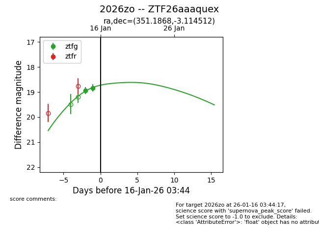
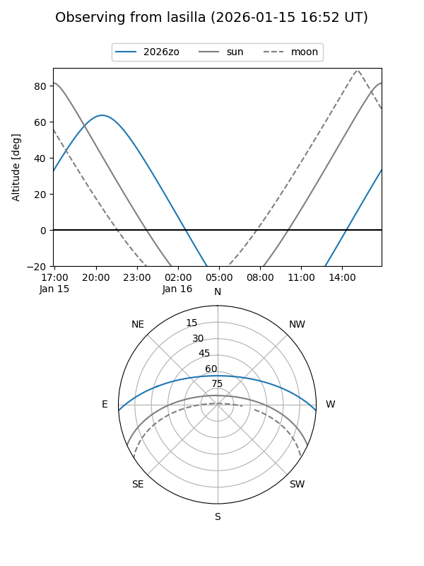
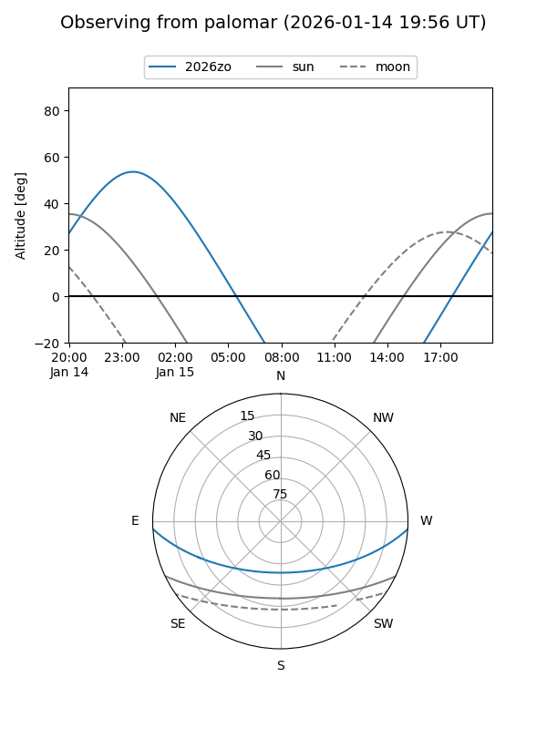
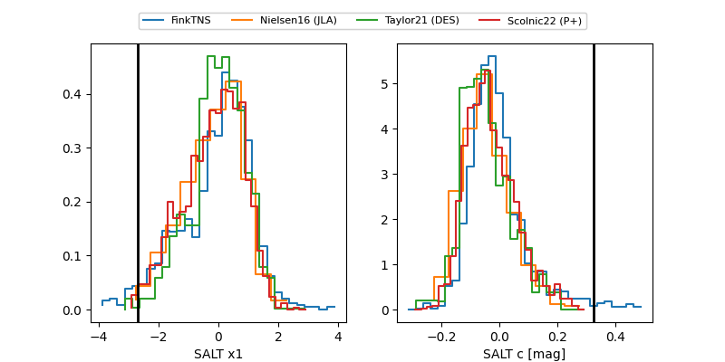

2026zo
Target 2026zo at 2026-01-15 08:50
Aliases and brokers:
FINK: link
Lasair: link
ALeRCE: link
TNS: link
YSE: link
alt names
ZTF26aaaquex (ztf,fink_ztf)
2026zo (tns,yse)
Coordinates:
equatorial (ra, dec) = 351.1868,-3.11451
equatorial (HMS+DMS) = 23:24:44.84,-03:06:52.24
galactic (l, b) = (78.3951,-58.27988)
Flags:
Photometry:
last ztfg=18.83
2 ztfg detections
Lightcurve

Visibility


Additional plots
